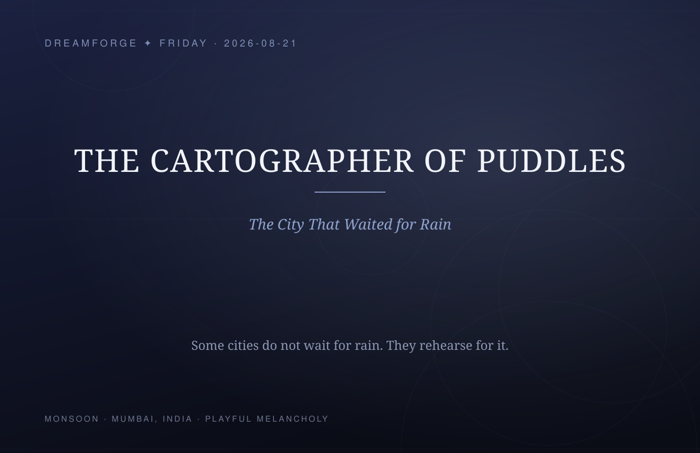
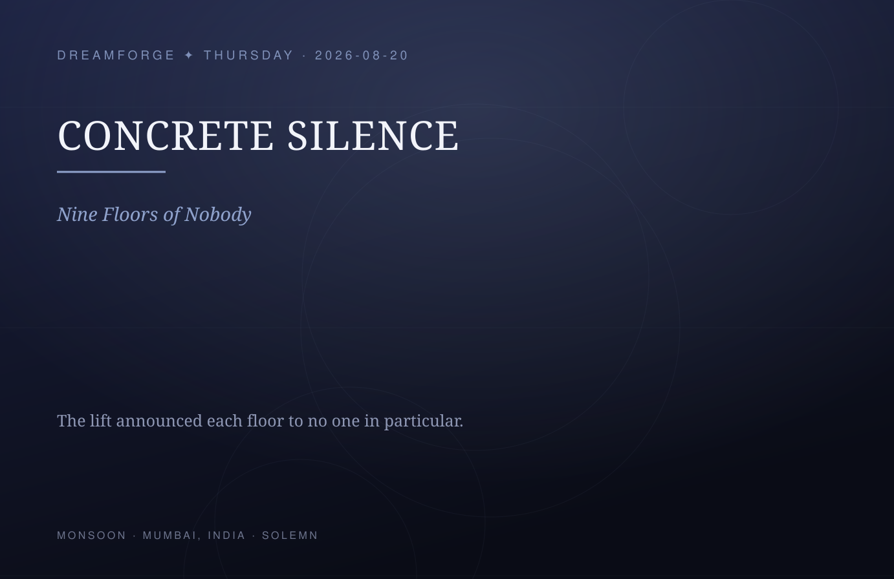
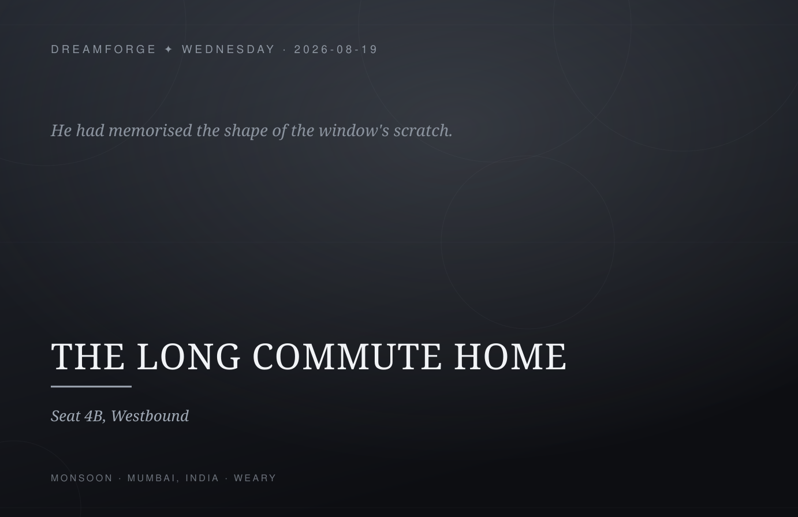
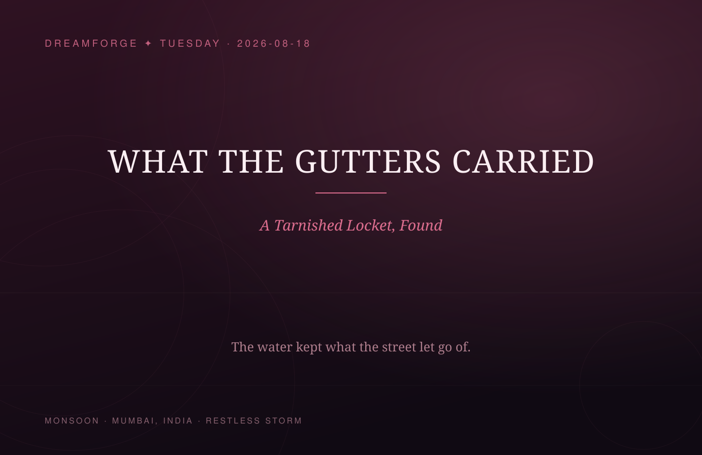
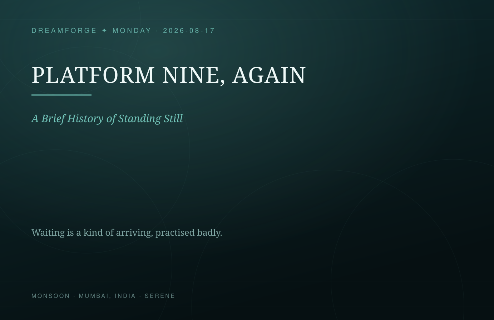
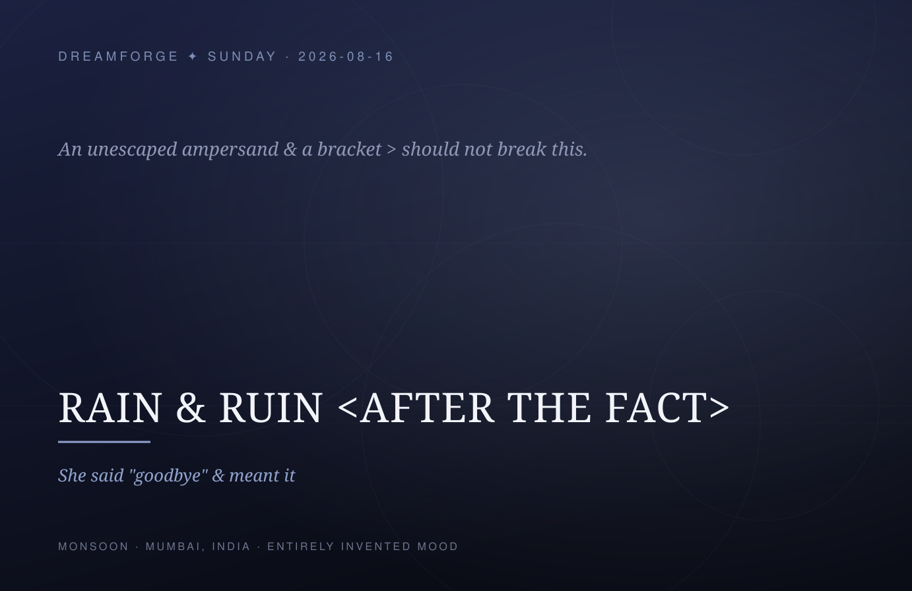
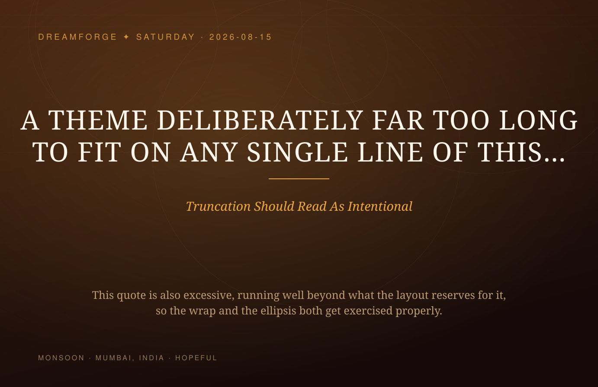

Rendered by agent/poster.py with no third-party libraries. The last two
samples are deliberately hostile: unescaped XML characters, an unknown mood, and
text far longer than the layout reserves.






